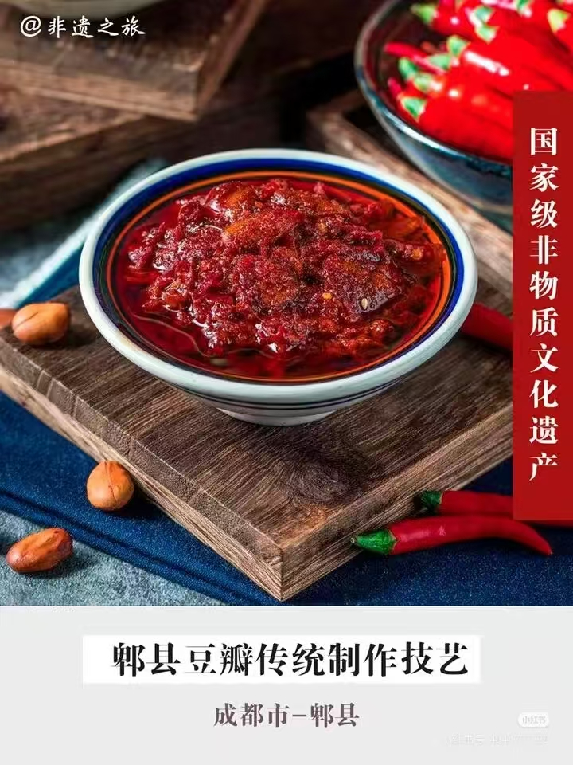

全聚德烤鸭

郫县豆瓣

沙县小吃

南京盐水鸭
嘉兴粽子
云南过桥米线
人间烟火气，最抚凡人心。中华美食不止是味蕾上的美味，更是流淌千年的非物质文化遗产。一粥一饭藏匠心，一菜一味有传承，每一道风味都承载着地域风情、民俗故事与匠人坚守。
中华非遗美食技艺承载着数千年饮食文明发展脉络，沉淀了古人的饮食智慧与生活理念。
非遗美食不仅注重口味调配，更讲究造型雕琢、色彩搭配与器皿映衬，蕴含着中式美学理念。
非遗美食是地域文化的鲜明名片，能够直观反映一方水土的物产特色与人文性格。
保护和传承非遗美食技艺，不仅是留住手工匠心与传统味道，更是延续民族文化根脉。

| 序号 | 非遗美食名称 | 所属地区 | 非遗类别 |
|---|